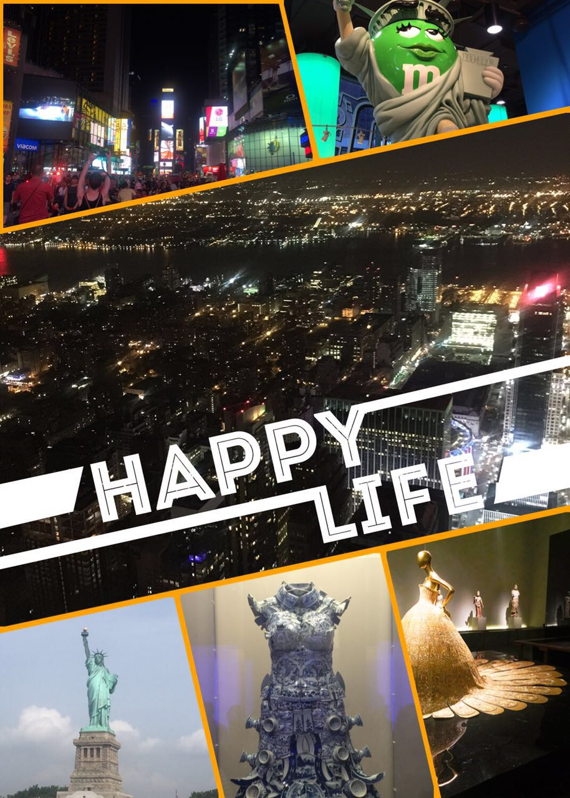
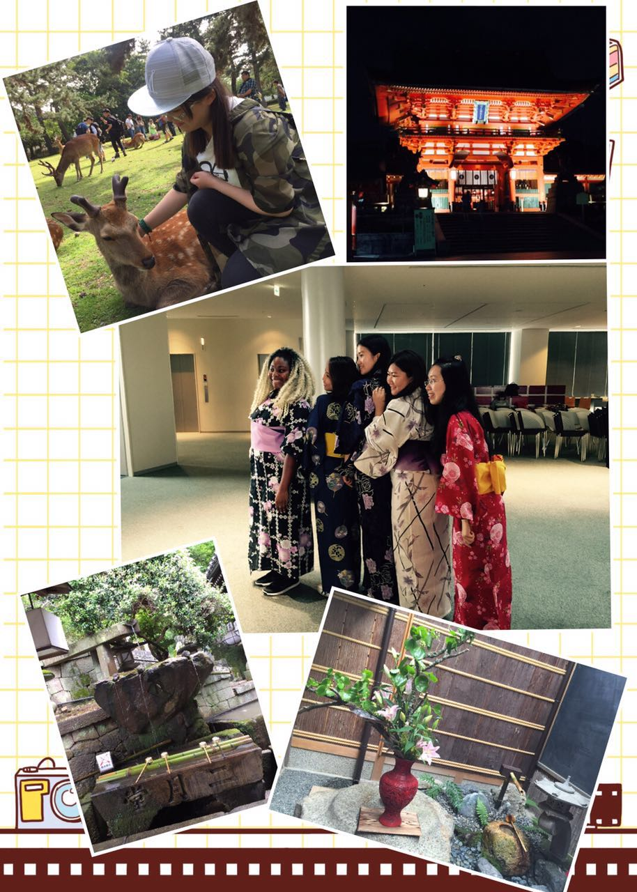
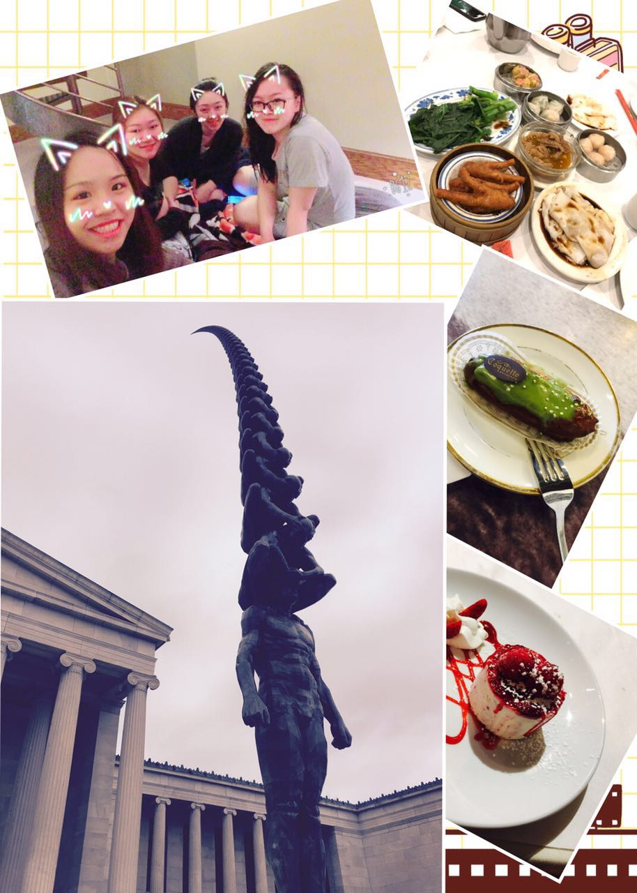

Xinyue's Footprint
New York

Wherever you are from in this world,
New York is probably the best place to be nostalgic because your
are very likely to come across your mother tongue on street. And,
don't miss out the barbecue in Korea town!
Japan

I was in Pitt in Japan 2016 and really
met many awesome people there. We were in Kobe and Osaka for most of
the time, but also travelled to surrounding cities like Kyoto, Nara
and Awaji Island. I even adventured to Tokyo by myself! I got tons
of comic books there...and lots of excitement!
Cleveland and Buffalo

My friends and I took a road trip to
Cleveland and Buffalo during last winter break and had a lot of fun.
Niagara falls are great! But it was so cold that all of us were
trembeling in wind so we did not take pictures lol. Try the restraunt
named Lihua. They have the authentic Dimsam dishes from Hongkong!